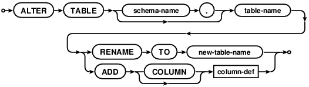

Choose any three.
|
|
SQL As Understood By SQLite
ALTER TABLE



SQLite supports a limited subset of ALTER TABLE. The ALTER TABLE command in SQLite allows the user to rename a table or to add a new column to an existing table.
The RENAME TO syntax changes the name of table-name to new-table-name. This command cannot be used to move a table between attached databases, only to rename a table within the same database.
If the table being renamed has triggers or indices, then these remain attached to the table after it has been renamed. However, if there are any view definitions, or statements executed by triggers that refer to the table being renamed, these are not automatically modified to use the new table name. If this is required, the triggers or view definitions must be dropped and recreated to use the new table name by hand.
Important Note: The 'ALTER TABLE ... RENAME TO ...' command does not update action statements within triggers or SELECT statements within views. If the table being renamed is referenced from within triggers or views, then those triggers and views must be dropped and recreated separately by the application.
If foreign key constraints are enabled when a table is renamed, then any REFERENCES clauses in any table (either the table being renamed or some other table) that refer to the table being renamed are modified to refer to the renamed table by its new name.
The ADD COLUMN syntax is used to add a new column to an existing table. The new column is always appended to the end of the list of existing columns. The column-def rule defines the characteristics of the new column. The new column may take any of the forms permissible in a CREATE TABLE statement, with the following restrictions:
- The column may not have a PRIMARY KEY or UNIQUE constraint.
- The column may not have a default value of CURRENT_TIME, CURRENT_DATE, CURRENT_TIMESTAMP, or an expression in parentheses.
- If a NOT NULL constraint is specified, then the column must have a default value other than NULL.
- If foreign key constraints are enabled and a column with a REFERENCES clause is added, the column must have a default value of NULL.
Note also that when adding a CHECK constraint, the CHECK constraint is not tested against preexisting rows of the table. This can result in a table that contains data that is in violation of the CHECK constraint. Future versions of SQLite might change to validate CHECK constraints as they are added.
The execution time of the ALTER TABLE command is independent of the amount of data in the table. The ALTER TABLE command runs as quickly on a table with 10 million rows as it does on a table with 1 row.
After ADD COLUMN has been run on a database, that database will not be readable by SQLite version 3.1.3 and earlier.
Making Other Kinds Of Table Schema Changes
The only schema altering commands directly supported by SQLite are the "rename table" and "add column" commands shown above. However, applications can make other arbitrary changes to the format of a table using a simple sequence of operations. The steps to make arbitrary changes to the schema design of some table X are as follows:
If foreign key constraints are enabled, disable them using PRAGMA foreign_keys=OFF.
Start a transaction.
Remember the format of all indexes and triggers associated with table X. This information will be needed in step 8 below. One way to do this is to run a query like the following: SELECT type, sql FROM sqlite_master WHERE tbl_name='X'.
Use CREATE TABLE to construct a new table "new_X" that is in the desired revised format of table X. Make sure that the name "new_X" does not collide with any existing table name, of course.
Transfer content from X into new_X using a statement like: INSERT INTO new_X SELECT ... FROM X.
Drop the old table X: DROP TABLE X.
Change the name of new_X to X using: ALTER TABLE new_X RENAME TO X.
Use CREATE INDEX and CREATE TRIGGER to reconstruct indexes and triggers associated with table X. Perhaps use the old format of the triggers and indexes saved from step 3 above as a guide, making changes as appropriate for the alteration.
If any views refer to table X in a way that is affected by the schema change, then drop those views using DROP VIEW and recreate them with whatever changes are necessary to accommodate the schema change using CREATE VIEW.
If foreign key constraints were originally enabled then run PRAGMA foreign_key_check to verify that the schema change did not break any foreign key constraints.
Commit the transaction started in step 2.
If foreign keys constraints were originally enabled, reenable them now.
The procedure above is completely general and will work even if the schema change causes the information stored in the table to change. So the full procedure above is appropriate for dropping a column, changing the order of columns, adding or removing a UNIQUE constraint or PRIMARY KEY, adding CHECK or FOREIGN KEY or NOT NULL constraints, or changing the datatype for a column, for example. However, a simpler and faster procedure can optionally be used for some changes that do no affect the on-disk content in any way. The following simpler procedure is appropriate for removing CHECK or FOREIGN KEY or NOT NULL constraints, renaming columns, or adding or removing or changing default values on a column.
Start a transaction.
Run PRAGMA schema_version to determine the current schema version number. This number will be needed for step 6 below.
Activate schema editing using PRAGMA writable_schema=ON.
Run an UPDATE statement to change the definition of table X in the sqlite_master table: UPDATE sqlite_master SET sql=... WHERE type='table' AND name='X';
Caution: Making a change to the sqlite_master table like this will render the database corrupt and unreadable if the change contains a syntax error. It is suggested that careful testing of the UPDATE statement be done on a separate blank database prior to using it on a database containing important data.
If the change to table X also affects other tables or indexes or triggers are views within schema, then run UPDATE statements to modify those other tables indexes and views too. For example, if the name of a column changes, all FOREIGN KEY constraints, triggers, indexes, and views that refer to that column must be modified.
Caution: Once again, making changes to the sqlite_master table like this will render the database corrupt and unreadable if the change contains an error. Carefully test of this entire procedure on a separate test database prior to using it on a database containing important data and/or make backup copies of important databases prior to running this procedure.
Increment the schema version number using PRAGMA schema_version=X where X is one more than the old schema version number found in step 2 above.
Disable schema editing using PRAGMA writable_schema=OFF.
(Optional) Run PRAGMA integrity_check to verify that the schema changes did not damage the database.
Commit the transaction started on step 1 above.
If some future version of SQLite adds new ALTER TABLE capabilities, those capabilities will very likely use one of the two procedures outlined above.